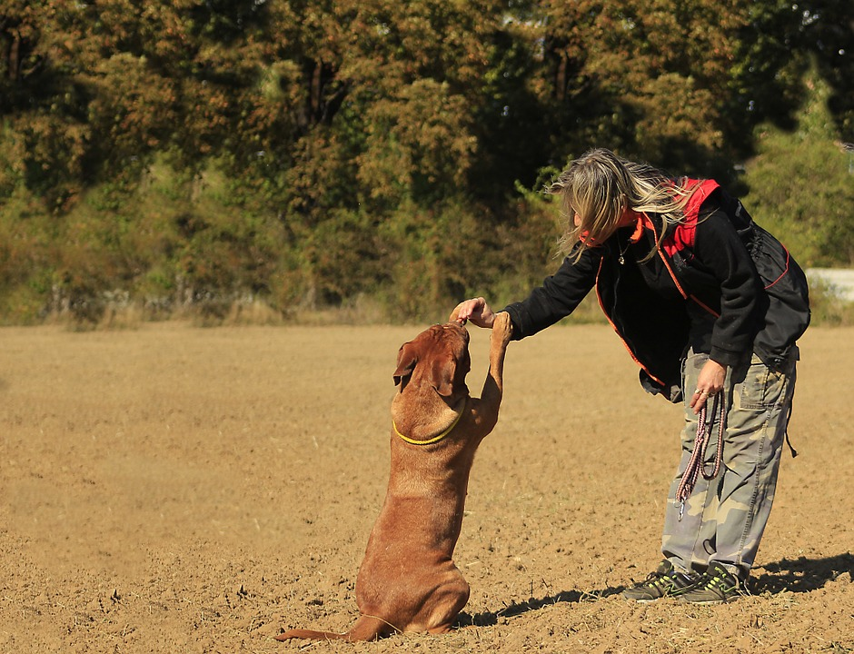

Contactame: nahuel35592@gmail.com

Todos deseamos tener un perro obediente y bien educado. Miramos con asombro a aquellos que logran que sus perros muestren un comportamiento impecable y nos preguntamos por qué el nuestro obedece únicamente cuando le interesa.
La realidad es que, detrás de ese buen comportamiento, se esconden horas de paciente entrenamiento y un profundo conocimiento sobre el comportamiento canino.
Los perros tienen un sistema comunicativo complejo. Si aprendes a interpretar sus múltiples señales, podrás establecer una buena comunicación con ellos. De esta manera, vuestra relación mejorará significativamente y crearéis un fuerte vínculo entre ambos, basado en la confianza mutua.
La comunicación, tanto verbal como no verbal, en ambas direcciones (perro-humano, humano-perro) es fundamental para comprender la conducta y comportamiento de tu perro. Además, es importante considerar los diferentes contextos y entornos en los que se emiten las señales. De esta manera, podremos comprender mejor a nuestro perro y anticiparnos a los problemas de conducta que puedan presentarse.
1| Todos en casa deben cumplir las reglas básicas que instaures para educar a tu perro. De lo contrario, se establecerá un conflicto, ya que el perro descubrirá que no siempre es necesario obedecer, por lo que el entrenamiento perderá efectividad. El perro no entenderá la importancia de cumplir tu orden. Por ejemplo, si no quieres que revolotee a tu alrededor mientras comes y le enseñas a tumbarse en su zona, todos deben hacer lo mismo. Si otra persona le permite acercarse y le da comida, acabará rondando alrededor de la mesa y pidiendo alimento a todo el mundo. Las normas deben ser firmes y consistentes.
2| Enséñale a obedecer las órdenes comenzándolas con su nombre.No le llames utilizando silbidos u otras opciones. Por ejemplo, si se llama “Thor”, la orden seguirá la estructura “Thor, orden”.De esta manera, tu perro comprenderá que la palabra “Thor” se refiere siempre a él y si alguien le llama silbando por la calle, ignorará la llamada.
3| Entrena las normas que tu perro debe cumplir dentro de casa. Es importante que tu perro tenga claro dónde comer, dormir y cualquier otra norma que desees que siga, como subirse o no al sofá o a la cama, no ladrar, etc.
4| Utiliza refuerzos positivos, como golosinas, caricias y alabanzas. El perro asociará la orden que está aprendiendo con algo placentero y asimilará más fácilmente las conductas que deseas enseñarle.
5| Ármate de paciencia. No todos los perros aprenden al mismo ritmo ni tienen la misma facilidad para comprender determinadas órdenes. Al igual que nosotros, los perros tienen personalidad propia y capacidades dispares entre ellos. Eso sí, todos los perros se pueden adiestrar, incluso cuando ya son adultos.
Realiza sesiones de entrenamiento que no sean demasiado largas y evita los elementos de distracción,sobre todo cuando comiences a enseñarle la nueva orden. Una vez que la haya aprendido, podrás ir añadiendo distracciones, para que tu perro aprenda a obedecer pase lo que pase a su alrededor.
